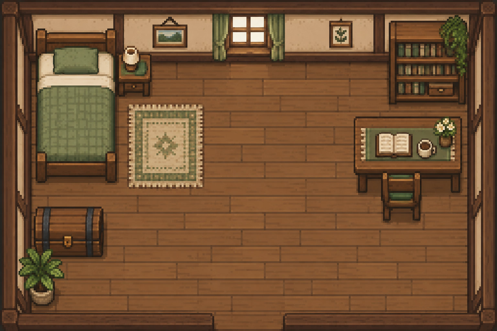

V · A room worth walking through Chapter 21 / 23
Solid furniture, simple collision
A picture can suggest a solid table. Only game rules make it solid.
Collide with the feet, not the painted silhouette#
An axis-aligned bounding box, or AABB, is a rectangle whose edges follow the world’s x and y axes. We use a small one around the feet because the head and torso visually rise above the floor. Making the whole sprite solid would stop the character when its hair reached a table, even though its feet were still far away.
Suppose the feet box’s right edge is at x=270 and a wall begins at x=274, with overlap along y. A request to move 10 units right has only 4 units of free travel. The solver clips that displacement to 4. It checks the crossed interval, so even a large step cannot jump through that wall when starting outside solids.
We resolve x first, then compute y from the updated position. That permits sliding along a wall, but makes corner behavior depend on axis order. This is a small solver for static rectangular obstacles, not a general physics engine. The floor art does not create colliders automatically; the authored boxes and valid spawn are part of the game data.
Two representations of one room#
Our character can currently cross the bed. The renderer is doing exactly what we asked: it draws pictures. It has no concept of furniture. We will add a small list of axis-aligned solid rectangles to the game package and constrain the player’s movement against them. No WebGPU descriptor changes, no shader changes, and no collision logic inside the renderer are necessary.
An axis-aligned bounding box, or AABB, is a rectangle described by minimum corner and size, with edges parallel to the world axes. We use one compact AABB around the player’s feet, not the full transparent image canvas. A top-down character has visual height, but stands on a much smaller ground footprint. Using the 32 × 32 sprite rectangle would collide against empty transparency and make door-sized gaps feel arbitrarily narrow.

The artwork is flattened into one background texture. We therefore do not implement walking behind separately sorted furniture layers. The small feet box lets the character’s upper body visually overlap furniture fronts, which is conventional for a top-down ground footprint. The collision rectangles are conservative authoring choices, not pixel-perfect silhouette tests. For true behind-furniture occlusion, the art would need separate layers and an explicit ordering policy; that is a different feature.
Add explicit room geometry#
Add game/collision.odin to the game package. Its world units are the same units used by game.position and WORLD_SIZE. To author against the supplied room, divide source-image x and y by four: 1536/384 = 1024/256 = 4. Do not divide by the current window scale. Resizing the window cannot move a bed in game space.
Box :: struct { min, size: [2]f32 }
// Hand-authored against room.png at 1536x1024, displayed at 384x256.
// This table is gameplay data, not inferred from the artwork or its alpha.
SOLIDS := [?]Box{
{{0, 0}, {384, 48}}, // north wall
{{0, 240}, {384, 16}}, // south wall; doorway is decorative
{{0, 48}, {24, 192}}, // west wall
{{362, 48}, {22, 192}}, // east wall
{{26, 24}, {65, 118}}, // bed
{{90, 41}, {27, 34}}, // bedside table
{{300, 16}, {60, 65}}, // bookshelf
{{274, 90}, {84, 60}}, // work table
{{295, 134}, {31, 38}}, // chair
{{26, 160}, {54, 40}}, // chest
{{17, 196}, {33, 39}}, // plant
}Feet :: proc(position: [2]f32) -> Box { return {position - [2]f32{4, 3}, {8, 4}} }The feet box runs from position − (4,3) to position + (4,1). Thus position is a near-boot anchor, not the box’s top-left corner. Four wall rectangles enclose a floor with x from 24 to 362 and y from 48 to 240. The character’s center can reach x = 358 at the east wall because its right edge is four units farther right. It reaches y = 51 at the north wall because its top edge is three units above the anchor. These numbers follow from geometry; they are not unexplained clamp constants.
The bed overlaps the north wall and the bedside table overlaps the bed slightly; overlapping static obstacles are fine. SOLIDS is addressable package storage so Odin can pass a slice without copying the list every update. We treat it as read-only after initialization. There is no per-frame allocation, spatial tree, or physics library: eleven boxes are cheap enough to inspect directly.
Overlaps :: proc(a, b: Box) -> bool {
return a.min.x < b.min.x+b.size.x && a.min.x+a.size.x > b.min.x &&
a.min.y < b.min.y+b.size.y && a.min.y+a.size.y > b.min.y
}Strict inequalities mean touching edges are not penetration. Two rectangles overlap only if they share a positive interval on both axes. This helper is useful in tests and spawn validation, but a final-position overlap test alone is not enough for movement: a large step could begin before a thin table and end beyond it without either endpoint overlapping.
Clip movement before crossing an edge#
Move :: proc(position: ^[2]f32, delta: [2]f32, solids: []Box) {
for axis in 0..<2 {
other := 1-axis
feet := Feet(position^)
allowed := delta[axis]
for solid in solids {
if feet.min[other] >= solid.min[other]+solid.size[other] ||
feet.min[other]+feet.size[other] <= solid.min[other] { continue }
near := feet.min[axis]
far := near+feet.size[axis]
solid_near := solid.min[axis]
solid_far := solid_near+solid.size[axis]
if allowed > 0 && far <= solid_near { allowed = min(allowed, solid_near-far) }
if allowed < 0 && near >= solid_far { allowed = max(allowed, solid_far-near) }
}
position[axis] += allowed
}
}For each axis, calculate how far movement may proceed before the first obstacle edge. On X, first reject every solid whose Y interval does not overlap the feet. For a positive X move, an obstacle is ahead if the feet’s right edge is at or left of its left edge. The permitted distance is at most obstacle.left − feet.right. Take the minimum over all candidates. For a negative move, use feet.left and obstacle.right and take the maximum negative distance. Obstacles farther away than the desired step cannot reduce it.
Apply that resolved X displacement, rebuild the feet from the new position, and repeat on Y. When one axis is blocked, the other may still move: that is wall sliding. Starting exactly at an edge yields a permitted zero step toward the wall but does not prevent stepping away. Because we compare crossed edges, a 1000-unit axis step still stops at the nearest solid rather than tunneling through it.
| Example | Calculation | Result |
|---|---|---|
| Feet center x=40, width 8; obstacle begins x=100; requested dx=1000 | Right edge=44; allowed=min(1000,100−44)=56 | New center x=96; right edge touches 100. |
| Feet center x=200; obstacle ends x=120; requested dx=−1000 | Left edge=196; allowed=max(−1000,120−196)=−76 | New center x=124; left edge touches 120. |
| Already touching the west side; request (20,20) | X is clipped to zero; Y is evaluated from resolved X | Slide down the side if no other obstacle blocks Y. |
Connect the simulation, not the drawing code#
In game.Update, replace the old position addition and floor clamps with Move(&g.position, delta, SOLIDS[:]). Leave normalization, speed, and seconds-based delta calculation in place. The collision function receives requested world displacement, not raw keyboard state, so it can be tested without SDL.
Update :: proc(g: ^State, input: Input, dt: f32) {
assert(dt >= 0)
direction := input.movement
length_squared := direction.x*direction.x + direction.y*direction.y
if length_squared > 1 { direction /= math.sqrt(length_squared) }
delta := direction * g.speed * dt
Move(&g.position, delta, SOLIDS[:])
}Normalize diagonal keyboard input before multiplying by speed and dt. Resolving a blocked component afterward naturally reduces total distance while sliding into a wall; do not renormalize the surviving displacement unless you deliberately want a different movement feel. Main still caps unusually long elapsed intervals at 0.05 seconds to avoid a huge catch-up jump after a stall. The collision routine itself is tested with much larger steps so its correctness is not dependent on that cap.
The renderer receives the resulting position through exactly the same Draw call as before. It does not read SOLIDS. When the player reaches a chair, the GPU simply sees identical character vertices on subsequent blocked updates. Collision does not stop a shader, modify a texture, or ask the GPU whether two pictures intersect.
Tests that explain the contract#
odin test tests/room -extra-linker-flags:"-L/opt/homebrew/lib"The supplied room tests check a clear spawn, large steps in both directions, contact and moving away, wall sliding, chair and room-wall contacts, strict edge overlap, frame-rate-independent movement, diagonal speed, and CPU sprite-recording bounds. They exercise the final source. The original foundation movement tests remain in tests/game and import checkpoint 18, preserving their original window-clamping contract instead of silently retargeting them to a different world model.
For a collision bug, first reproduce it as positions, rectangles, and one requested displacement. If that deterministic case fails, the GPU is not relevant. If it passes but the screen looks wrong, compare the artwork’s scale, sprite anchor, and collision overlay. That division turns “the character is stuck” into a testable question about units, geometry, input, or presentation.
When this work happens#
| Operation | Frequency | Reason |
|---|---|---|
| Define static solid rectangles | Once as game data | No texture scan or GPU readback is necessary. |
| Clip X then Y against solid rectangles | Once per update | Work scales with this tiny fixed obstacle list. |
| Draw the resolved character position | Once per frame | Same renderer API and GPU pipeline as before. |
| Resize the window | No collision work | The fixed world does not depend on framebuffer size. |
Read the symptom, test a hypothesis#
| Symptom | What to inspect | Why it matters |
|---|---|---|
| Stops far from furniture | Compare the feet box and authored solid with the visual canvas | Transparent padding and sprite height are not ground footprint. |
| Teleports through a thin object | Check whether only the final position was tested | Crossed edges must constrain displacement. |
| Cannot move away from a wall | Inspect sign tests and touching-edge rules | An edge should restrict motion into the solid, not out of contact. |
| Spawns inside a bed and behaves strangely | Validate initial feet against all solids | This solver assumes nonpenetrating starts; it is not an overlap-recovery system. |
Experiments#
These short, optional checks help you test the explanation. Predict the result first, then run the program. Restore the chapter’s baseline before continuing; later chapters assume the supplied checkpoint.
- Move the spawn to an open spot and verify it against every solid before running. Then deliberately choose a bed position and explain why that violates the solver contract.
- Temporarily increase speed to 720. Verify that walls still stop the player, and distinguish collision correctness from unpleasant movement feel.
- Change the rug from walkable to solid by adding one authored box. No renderer changes should be necessary.
What we have now#
The character stops at room walls and furniture, slides along edges, and cannot tunnel through thin obstacles with a large axis step.
Before moving on, run this checkpoint and compare it with the stated result. If it differs, use the symptom table above or the complete files below to locate the missing step.
Run odin run checkpoints/21/src from the book root, with the SDL linker flags for your platform. Dependency and build instructions →
Challenges#
Optional extensions. The complete game in chapter 23 requires none of these. Work in a separate copy if you want to explore; the next chapter starts from this chapter’s supplied baseline.
A useful doorway
Split the south-wall solid around the painted doorway and add a trigger beyond the opening. Initially reset the player to the spawn or change the room’s tint instead of loading another level.
Check your result: The doorway permits passage while the remaining south wall still blocks movement, including large steps.
An interactable chest
Add an interaction request and a non-solid range box near the chest. Change game state when the player presses the action key in range.
Check your result: The chest remains solid, while interaction is possible nearby without requiring the feet to overlap its solid box.
Exact code changes and runnable checkpoint#
| File | Operation |
|---|---|
game/game.odin | Replace the changed portions shown below; preserve all other code |
game/collision.odin | Add this file |
Exact patch from the preceding checkpoint
Download changes.patch · inspect or apply with patch -p1 from your own project directory at the previous checkpoint.
--- before/game/game.odin
+++ after/game/game.odin
@@ -25,9 +25,7 @@
length_squared := direction.x*direction.x + direction.y*direction.y
if length_squared > 1 { direction /= math.sqrt(length_squared) }
delta := direction * g.speed * dt
- g.position += delta
- g.position.x = clamp(g.position.x, f32(28), f32(358))
- g.position.y = clamp(g.position.y, f32(51), f32(239))
+ Move(&g.position, delta, SOLIDS[:])
}
Draw :: proc(g: ^State, r: ^renderer.State) {
--- before/game/collision.odin
+++ after/game/collision.odin
@@ -0,0 +1,44 @@
+package game
+
+Box :: struct { min, size: [2]f32 }
+// Hand-authored against room.png at 1536x1024, displayed at 384x256.
+// This table is gameplay data, not inferred from the artwork or its alpha.
+SOLIDS := [?]Box{
+ {{0, 0}, {384, 48}}, // north wall
+ {{0, 240}, {384, 16}}, // south wall; doorway is decorative
+ {{0, 48}, {24, 192}}, // west wall
+ {{362, 48}, {22, 192}}, // east wall
+ {{26, 24}, {65, 118}}, // bed
+ {{90, 41}, {27, 34}}, // bedside table
+ {{300, 16}, {60, 65}}, // bookshelf
+ {{274, 90}, {84, 60}}, // work table
+ {{295, 134}, {31, 38}}, // chair
+ {{26, 160}, {54, 40}}, // chest
+ {{17, 196}, {33, 39}}, // plant
+}
+Feet :: proc(position: [2]f32) -> Box { return {position - [2]f32{4, 3}, {8, 4}} }
+Overlaps :: proc(a, b: Box) -> bool {
+ return a.min.x < b.min.x+b.size.x && a.min.x+a.size.x > b.min.x &&
+ a.min.y < b.min.y+b.size.y && a.min.y+a.size.y > b.min.y
+}
+
+// Axis-separated swept AABB: clip displacement at the first crossed solid edge.
+// Starting feet must be outside all solids. Obstacles are static, axis-aligned.
+Move :: proc(position: ^[2]f32, delta: [2]f32, solids: []Box) {
+ for axis in 0..<2 {
+ other := 1-axis
+ feet := Feet(position^)
+ allowed := delta[axis]
+ for solid in solids {
+ if feet.min[other] >= solid.min[other]+solid.size[other] ||
+ feet.min[other]+feet.size[other] <= solid.min[other] { continue }
+ near := feet.min[axis]
+ far := near+feet.size[axis]
+ solid_near := solid.min[axis]
+ solid_far := solid_near+solid.size[axis]
+ if allowed > 0 && far <= solid_near { allowed = min(allowed, solid_near-far) }
+ if allowed < 0 && near >= solid_far { allowed = max(allowed, solid_far-near) }
+ }
+ position[axis] += allowed
+ }
+}Complete end-of-chapter files follow. These are already present in checkpoints/21/; no assembly from excerpts is required.
Binary assets are separate from the text patch: room.png · player.png. Copy them into assets/ in this checkpoint.
{kind=link}
{kind=link}
renderer/renderer.odin 238 lines
Download this checkpoint’s renderer/renderer.odin
package renderer
import "core:fmt"
import "core:math"
import sdl "vendor:sdl3"
import wgpu "vendor:wgpu"
// API: Init, Shutdown, Load_PNG, Begin_Frame, Sprite, Rect, End_Frame, Resize.
// All calls occur on SDL's main thread. State must not be copied after Init.
Texture_ID :: distinct u32
Frame_Result :: enum { Presented, Skipped, Fatal }
MAX_SPRITES :: 256
MAX_TEXTURES :: 8
Vertex :: struct { position, uv: [2]f32, tint: [4]f32 }
View_Uniform :: struct #align(16) { size, padding: [2]f32 }
#assert(size_of(Vertex) == 32)
#assert(offset_of(Vertex, uv) == 8)
#assert(offset_of(Vertex, tint) == 16)
#assert(size_of(View_Uniform) == 16)
Texture_Slot :: struct { texture: wgpu.Texture, view: wgpu.TextureView, group: wgpu.BindGroup }
State :: struct {
gpu: GPU,
window: ^sdl.Window,
pipeline: wgpu.RenderPipeline,
vertex_buffer, index_buffer, view_buffer: wgpu.Buffer,
view_group: wgpu.BindGroup,
texture_layout: wgpu.BindGroupLayout,
sampler: wgpu.Sampler,
textures: [MAX_TEXTURES]Texture_Slot,
texture_count: int,
white: Texture_ID,
vertices: [MAX_SPRITES * 4]Vertex,
texture_ids: [MAX_SPRITES]Texture_ID,
count: int,
view_size: [2]f32,
recording, overflow: bool,
}
Init :: proc(r: ^State, window: ^sdl.Window) -> bool {
r.window = window
if !gpu_init(&r.gpu, window) { return false }
r.vertex_buffer = wgpu.DeviceCreateBuffer(r.gpu.device, &wgpu.BufferDescriptor{
label = "sprite vertices", size = size_of(r.vertices), usage = {.Vertex, .CopyDst},
})
indices: [MAX_SPRITES * 6]u16
quad := [6]u16{0, 1, 2, 0, 2, 3}
for i in 0..<MAX_SPRITES {
for value, j in quad { indices[i*6+j] = u16(i*4) + value }
}
r.index_buffer = wgpu.DeviceCreateBuffer(r.gpu.device, &wgpu.BufferDescriptor{
label = "quad indices", size = size_of(indices), usage = {.Index, .CopyDst},
})
r.view_buffer = wgpu.DeviceCreateBuffer(r.gpu.device, &wgpu.BufferDescriptor{
label = "world extent", size = size_of(View_Uniform), usage = {.Uniform, .CopyDst},
})
if r.vertex_buffer == nil || r.index_buffer == nil || r.view_buffer == nil { return false }
wgpu.QueueWriteBuffer(r.gpu.queue, r.index_buffer, 0, &indices, size_of(indices))
view_entry := wgpu.BindGroupLayoutEntry{
binding = 0, visibility = {.Vertex},
buffer = {type = .Uniform, minBindingSize = size_of(View_Uniform)},
}
view_layout := wgpu.DeviceCreateBindGroupLayout(r.gpu.device, &wgpu.BindGroupLayoutDescriptor{
entryCount = 1, entries = &view_entry,
})
if view_layout == nil { return false }
defer wgpu.BindGroupLayoutRelease(view_layout)
uniform_entry := wgpu.BindGroupEntry{binding = 0, buffer = r.view_buffer, size = size_of(View_Uniform)}
r.view_group = wgpu.DeviceCreateBindGroup(r.gpu.device, &wgpu.BindGroupDescriptor{
layout = view_layout, entryCount = 1, entries = &uniform_entry,
})
texture_entries := [2]wgpu.BindGroupLayoutEntry{
{binding = 0, visibility = {.Fragment}, texture = {sampleType = .Float, viewDimension = ._2D}},
{binding = 1, visibility = {.Fragment}, sampler = {type = .Filtering}},
}
r.texture_layout = wgpu.DeviceCreateBindGroupLayout(r.gpu.device, &wgpu.BindGroupLayoutDescriptor{
entryCount = len(texture_entries), entries = raw_data(texture_entries[:]),
})
r.sampler = wgpu.DeviceCreateSampler(r.gpu.device, &wgpu.SamplerDescriptor{
label = "nearest, no repeat", addressModeU = .ClampToEdge,
addressModeV = .ClampToEdge, addressModeW = .ClampToEdge,
minFilter = .Nearest, magFilter = .Nearest, mipmapFilter = .Nearest,
lodMinClamp = 0, lodMaxClamp = 0, maxAnisotropy = 1,
})
if r.view_group == nil || r.texture_layout == nil || r.sampler == nil { return false }
layouts := [2]wgpu.BindGroupLayout{view_layout, r.texture_layout}
layout := wgpu.DeviceCreatePipelineLayout(r.gpu.device, &wgpu.PipelineLayoutDescriptor{
bindGroupLayoutCount = len(layouts), bindGroupLayouts = raw_data(layouts[:]),
})
if layout == nil { return false }
defer wgpu.PipelineLayoutRelease(layout)
source := wgpu.ShaderSourceWGSL{chain = {sType = .ShaderSourceWGSL}, code = #load("sprites.wgsl", string)}
shader := wgpu.DeviceCreateShaderModule(r.gpu.device, &wgpu.ShaderModuleDescriptor{nextInChain = &source.chain})
if shader == nil { return false }
defer wgpu.ShaderModuleRelease(shader)
blend := wgpu.BlendState{
color = {operation = .Add, srcFactor = .SrcAlpha, dstFactor = .OneMinusSrcAlpha},
alpha = {operation = .Add, srcFactor = .One, dstFactor = .OneMinusSrcAlpha},
}
target := wgpu.ColorTargetState{format = r.gpu.config.format, blend = &blend, writeMask = {.Red, .Green, .Blue, .Alpha}}
fragment := wgpu.FragmentState{module = shader, entryPoint = "fs_main", targetCount = 1, targets = &target}
attributes := [3]wgpu.VertexAttribute{
{format = .Float32x2, offset = 0, shaderLocation = 0},
{format = .Float32x2, offset = 8, shaderLocation = 1},
{format = .Float32x4, offset = 16, shaderLocation = 2},
}
vertex_layout := wgpu.VertexBufferLayout{arrayStride = size_of(Vertex), stepMode = .Vertex,
attributeCount = len(attributes), attributes = raw_data(attributes[:])}
r.pipeline = wgpu.DeviceCreateRenderPipeline(r.gpu.device, &wgpu.RenderPipelineDescriptor{
label = "sprite pipeline", layout = layout,
vertex = {module = shader, entryPoint = "vs_main", bufferCount = 1, buffers = &vertex_layout},
fragment = &fragment, primitive = {topology = .TriangleList, frontFace = .CCW, cullMode = .None},
multisample = {count = 1, mask = 0xffffffff},
})
if r.pipeline == nil || gpu_failed() { return false }
white := [4]u8{255, 255, 255, 255}
r.white = upload_rgba(r, white[:], 1, 1)
return r.white != 0 && !gpu_failed()
}
Resize :: proc(r: ^State) { r.gpu.dirty = true }
Begin_Frame :: proc(r: ^State, world_size: [2]f32) {
assert(!r.recording && world_size.x > 0 && world_size.y > 0)
r.recording = true
r.count = 0
r.overflow = false
r.view_size = world_size
}
Sprite :: proc(r: ^State, texture: Texture_ID, position, size: [2]f32,
tint: [4]f32 = {1, 1, 1, 1}) {
assert(r.recording, "Sprite must be between Begin_Frame and End_Frame")
if r.count == MAX_SPRITES || texture == 0 || int(texture) > r.texture_count {
r.overflow = true
return
}
assert(size.x > 0 && size.y > 0)
corners := [4][2]f32{{0, 0}, {1, 0}, {1, 1}, {0, 1}}
for corner, i in corners {
r.vertices[r.count*4+i] = {position + corner*size, corner, tint}
}
r.texture_ids[r.count] = texture
r.count += 1
}
Rect :: proc(r: ^State, position, size: [2]f32, color: [4]f32) {
Sprite(r, r.white, position, size, color)
}
End_Frame :: proc(r: ^State) -> Frame_Result {
assert(r.recording)
r.recording = false
if r.overflow { fmt.eprintln("Sprite capacity exceeded or invalid texture ID"); return .Fatal }
gpu := &r.gpu
wgpu.InstanceProcessEvents(gpu.instance)
if gpu_failed() { return .Fatal }
if !gpu_refresh_surface(gpu, r.window) {
if gpu_failed() { return .Fatal }
return .Skipped
}
frame := wgpu.SurfaceGetCurrentTexture(gpu.platform.surface)
defer if frame.texture != nil { wgpu.TextureRelease(frame.texture) }
#partial switch frame.status {
case .SuccessOptimal:
case .SuccessSuboptimal: gpu.dirty = true
case .Timeout, .Occluded: return .Skipped
case .Outdated: gpu.dirty = true; return .Skipped
case: fmt.eprintln("Surface acquisition:", frame.status); return .Fatal
}
if frame.texture == nil { return .Fatal }
view := wgpu.TextureCreateView(frame.texture, nil)
if view == nil { return .Fatal }
defer wgpu.TextureViewRelease(view)
uniforms := View_Uniform{size = r.view_size}
wgpu.QueueWriteBuffer(gpu.queue, r.view_buffer, 0, &uniforms, size_of(uniforms))
if r.count > 0 {
wgpu.QueueWriteBuffer(gpu.queue, r.vertex_buffer, 0, &r.vertices[0], uint(r.count*4*size_of(Vertex)))
}
encoder := wgpu.DeviceCreateCommandEncoder(gpu.device, &wgpu.CommandEncoderDescriptor{label = "room frame"})
if encoder == nil { return .Fatal }
defer wgpu.CommandEncoderRelease(encoder)
attachment := wgpu.RenderPassColorAttachment{view = view, depthSlice = wgpu.DEPTH_SLICE_UNDEFINED,
loadOp = .Clear, storeOp = .Store, clearValue = {0.012, 0.018, 0.025, 1}}
pass := wgpu.CommandEncoderBeginRenderPass(encoder, &wgpu.RenderPassDescriptor{
colorAttachmentCount = 1, colorAttachments = &attachment,
})
if pass == nil { return .Fatal }
defer wgpu.RenderPassEncoderRelease(pass)
width, height := f32(gpu.config.width), f32(gpu.config.height)
scale := min(width/r.view_size.x, height/r.view_size.y)
if scale >= 1 { scale = math.floor(scale) }
viewport := r.view_size * scale
// Guard floating-point roundoff at very small fractional fit scales.
viewport.x = min(viewport.x, width)
viewport.y = min(viewport.y, height)
origin := [2]f32{math.floor((width-viewport.x)/2), math.floor((height-viewport.y)/2)}
wgpu.RenderPassEncoderSetViewport(pass, origin.x, origin.y, viewport.x, viewport.y, 0, 1)
wgpu.RenderPassEncoderSetScissorRect(pass, u32(origin.x), u32(origin.y), u32(math.ceil(viewport.x)), u32(math.ceil(viewport.y)))
wgpu.RenderPassEncoderSetPipeline(pass, r.pipeline)
wgpu.RenderPassEncoderSetBindGroup(pass, 0, r.view_group)
wgpu.RenderPassEncoderSetVertexBuffer(pass, 0, r.vertex_buffer, 0, size_of(r.vertices))
wgpu.RenderPassEncoderSetIndexBuffer(pass, r.index_buffer, .Uint16, 0, MAX_SPRITES*6*size_of(u16))
// Adjacent equal textures form a run. Never sort transparent sprites by texture.
first := 0
for first < r.count {
end := first + 1
for end < r.count && r.texture_ids[end] == r.texture_ids[first] { end += 1 }
slot := &r.textures[int(r.texture_ids[first])-1]
wgpu.RenderPassEncoderSetBindGroup(pass, 1, slot.group)
wgpu.RenderPassEncoderDrawIndexed(pass, u32((end-first)*6), 1, u32(first*6), 0, 0)
first = end
}
wgpu.RenderPassEncoderEnd(pass)
commands := wgpu.CommandEncoderFinish(encoder, &wgpu.CommandBufferDescriptor{})
if commands == nil { return .Fatal }
defer wgpu.CommandBufferRelease(commands)
if gpu_failed() { return .Fatal }
wgpu.QueueSubmit(gpu.queue, []wgpu.CommandBuffer{commands})
if wgpu.SurfacePresent(gpu.platform.surface) != .Success || gpu_failed() { return .Fatal }
return .Presented
}
Shutdown :: proc(r: ^State) {
if r.gpu.device != nil { _ = wgpu.DevicePoll(r.gpu.device, true, nil) }
for &slot in r.textures {
if slot.group != nil { wgpu.BindGroupRelease(slot.group) }
if slot.view != nil { wgpu.TextureViewRelease(slot.view) }
if slot.texture != nil { wgpu.TextureRelease(slot.texture) }
}
if r.sampler != nil { wgpu.SamplerRelease(r.sampler) }
if r.texture_layout != nil { wgpu.BindGroupLayoutRelease(r.texture_layout) }
if r.view_group != nil { wgpu.BindGroupRelease(r.view_group) }
if r.view_buffer != nil { wgpu.BufferRelease(r.view_buffer) }
if r.index_buffer != nil { wgpu.BufferRelease(r.index_buffer) }
if r.vertex_buffer != nil { wgpu.BufferRelease(r.vertex_buffer) }
if r.pipeline != nil { wgpu.RenderPipelineRelease(r.pipeline) }
gpu_destroy(&r.gpu)
r^ = {}
}
renderer/texture.odin 49 lines
Download this checkpoint’s renderer/texture.odin
package renderer
import "core:c"
import "core:fmt"
import stbi "vendor:stb/image"
import wgpu "vendor:wgpu"
// Trusted, embedded PNG assets only. The decoder does not create GPU resources.
Load_PNG :: proc(r: ^State, encoded: []u8) -> Texture_ID {
assert(!r.recording, "Load textures during initialization")
if len(encoded) == 0 || len(encoded) > 0x7fffffff { return 0 }
width, height, channels: c.int
if stbi.info_from_memory(raw_data(encoded), c.int(len(encoded)), &width, &height, &channels) == 0 {
fmt.eprintln("Invalid image header"); return 0
}
if width <= 0 || height <= 0 || u32(width) > r.gpu.max_texture_dimension ||
u32(height) > r.gpu.max_texture_dimension { fmt.eprintln("Image dimensions exceed device limits"); return 0 }
pixels := stbi.load_from_memory(raw_data(encoded), c.int(len(encoded)), &width, &height, &channels, 4)
if pixels == nil { fmt.eprintln("PNG decoding failed"); return 0 }
defer stbi.image_free(pixels)
return upload_rgba(r, pixels[:int(width)*int(height)*4], u32(width), u32(height))
}
@(private)
upload_rgba :: proc(r: ^State, pixels: []u8, width, height: u32) -> Texture_ID {
if r.texture_count == MAX_TEXTURES { fmt.eprintln("Texture capacity exceeded"); return 0 }
slot := &r.textures[r.texture_count]
slot.texture = wgpu.DeviceCreateTexture(r.gpu.device, &wgpu.TextureDescriptor{
label = "sprite RGBA", size = {width, height, 1}, dimension = ._2D,
format = .RGBA8UnormSrgb, mipLevelCount = 1, sampleCount = 1,
usage = {.TextureBinding, .CopyDst},
})
if slot.texture == nil { return 0 }
destination := wgpu.TexelCopyTextureInfo{texture = slot.texture, aspect = .All}
layout := wgpu.TexelCopyBufferLayout{bytesPerRow = width*4, rowsPerImage = height}
extent := wgpu.Extent3D{width, height, 1}
wgpu.QueueWriteTexture(r.gpu.queue, &destination, raw_data(pixels), uint(len(pixels)), &layout, &extent)
slot.view = wgpu.TextureCreateView(slot.texture, nil)
if slot.view == nil { return 0 }
entries := [2]wgpu.BindGroupEntry{
{binding = 0, textureView = slot.view},
{binding = 1, sampler = r.sampler},
}
slot.group = wgpu.DeviceCreateBindGroup(r.gpu.device, &wgpu.BindGroupDescriptor{
layout = r.texture_layout, entryCount = len(entries), entries = raw_data(entries[:]),
})
if slot.group == nil || gpu_failed() { return 0 }
r.texture_count += 1
return Texture_ID(r.texture_count)
}
renderer/sprites.wgsl 22 lines
Download this checkpoint’s renderer/sprites.wgsl
struct View { size: vec2f, padding: vec2f }
@group(0) @binding(0) var<uniform> view: View;
@group(1) @binding(0) var sprite: texture_2d<f32>;
@group(1) @binding(1) var sprite_sampler: sampler;
struct Vertex_Output {
@builtin(position) position: vec4f,
@location(0) uv: vec2f,
@location(1) tint: vec4f,
}
@vertex fn vs_main(@location(0) position: vec2f,
@location(1) uv: vec2f,
@location(2) tint: vec4f) -> Vertex_Output {
var out: Vertex_Output;
out.position = vec4f(position.x / view.size.x * 2.0 - 1.0,
1.0 - position.y / view.size.y * 2.0, 0.0, 1.0);
out.uv = uv;
out.tint = tint;
return out;
}
@fragment fn fs_main(in: Vertex_Output) -> @location(0) vec4f {
return textureSample(sprite, sprite_sampler, in.uv) * in.tint;
}
game/game.odin 37 lines
Download this checkpoint’s game/game.odin
package game
import "core:math"
import renderer "../renderer"
WORLD_SIZE :: [2]f32{384, 256}
State :: struct {
position: [2]f32,
speed: f32,
room, player: renderer.Texture_ID,
}
Input :: struct { movement: [2]f32 }
Init :: proc(g: ^State, r: ^renderer.State) -> bool {
g.position = {192, 205}
g.speed = 72
g.room = renderer.Load_PNG(r, #load("../assets/room.png", []u8))
if g.room == 0 { return false }
g.player = renderer.Load_PNG(r, #load("../assets/player.png", []u8))
return g.player != 0
}
Update :: proc(g: ^State, input: Input, dt: f32) {
assert(dt >= 0)
direction := input.movement
length_squared := direction.x*direction.x + direction.y*direction.y
if length_squared > 1 { direction /= math.sqrt(length_squared) }
delta := direction * g.speed * dt
Move(&g.position, delta, SOLIDS[:])
}
Draw :: proc(g: ^State, r: ^renderer.State) {
renderer.Sprite(r, g.room, {0, 0}, WORLD_SIZE)
// Only the displayed position is snapped. Simulation retains subpixel motion.
feet := [2]f32{math.round(g.position.x), math.round(g.position.y)}
renderer.Sprite(r, g.player, feet - [2]f32{16, 30}, {32, 32})
}
game/collision.odin 44 lines
Download this checkpoint’s game/collision.odin
package game
Box :: struct { min, size: [2]f32 }
// Hand-authored against room.png at 1536x1024, displayed at 384x256.
// This table is gameplay data, not inferred from the artwork or its alpha.
SOLIDS := [?]Box{
{{0, 0}, {384, 48}}, // north wall
{{0, 240}, {384, 16}}, // south wall; doorway is decorative
{{0, 48}, {24, 192}}, // west wall
{{362, 48}, {22, 192}}, // east wall
{{26, 24}, {65, 118}}, // bed
{{90, 41}, {27, 34}}, // bedside table
{{300, 16}, {60, 65}}, // bookshelf
{{274, 90}, {84, 60}}, // work table
{{295, 134}, {31, 38}}, // chair
{{26, 160}, {54, 40}}, // chest
{{17, 196}, {33, 39}}, // plant
}
Feet :: proc(position: [2]f32) -> Box { return {position - [2]f32{4, 3}, {8, 4}} }
Overlaps :: proc(a, b: Box) -> bool {
return a.min.x < b.min.x+b.size.x && a.min.x+a.size.x > b.min.x &&
a.min.y < b.min.y+b.size.y && a.min.y+a.size.y > b.min.y
}
// Axis-separated swept AABB: clip displacement at the first crossed solid edge.
// Starting feet must be outside all solids. Obstacles are static, axis-aligned.
Move :: proc(position: ^[2]f32, delta: [2]f32, solids: []Box) {
for axis in 0..<2 {
other := 1-axis
feet := Feet(position^)
allowed := delta[axis]
for solid in solids {
if feet.min[other] >= solid.min[other]+solid.size[other] ||
feet.min[other]+feet.size[other] <= solid.min[other] { continue }
near := feet.min[axis]
far := near+feet.size[axis]
solid_near := solid.min[axis]
solid_far := solid_near+solid.size[axis]
if allowed > 0 && far <= solid_near { allowed = min(allowed, solid_near-far) }
if allowed < 0 && near >= solid_far { allowed = max(allowed, solid_far-near) }
}
position[axis] += allowed
}
}
src/main.odin 52 lines
Download this checkpoint’s src/main.odin
package room
import "core:fmt"
import sdl "vendor:sdl3"
import renderer "../renderer"
import game "../game"
main :: proc() {
if !sdl.Init({.VIDEO}) { fmt.eprintln("SDL initialization:", sdl.GetError()); return }
defer sdl.Quit()
flags: sdl.WindowFlags = {.RESIZABLE, .HIGH_PIXEL_DENSITY}
when ODIN_OS == .Darwin { flags += {.METAL} }
window := sdl.CreateWindow("Native Pixels — WASD / arrows", 1152, 768, flags)
if window == nil { fmt.eprintln("Window creation:", sdl.GetError()); return }
defer sdl.DestroyWindow(window)
if !sdl.ShowWindow(window) { fmt.eprintln("Show window:", sdl.GetError()); return }
if !sdl.RaiseWindow(window) { fmt.eprintln("Window focus request:", sdl.GetError()) }
rendering: renderer.State
defer renderer.Shutdown(&rendering)
if !renderer.Init(&rendering, window) { fmt.eprintln("Renderer initialization failed"); return }
world: game.State
if !game.Init(&world, &rendering) { fmt.eprintln("Game assets failed to load"); return }
previous_ticks := sdl.GetTicksNS()
running := true
for running {
input: game.Input
event: sdl.Event
for sdl.PollEvent(&event) {
#partial switch event.type {
case .QUIT, .WINDOW_CLOSE_REQUESTED: running = false
case .WINDOW_PIXEL_SIZE_CHANGED, .WINDOW_RESTORED: renderer.Resize(&rendering)
}
}
if !running { break }
now := sdl.GetTicksNS()
dt := min(f64(now-previous_ticks)/1_000_000_000.0, 0.05)
previous_ticks = now
if .MINIMIZED in sdl.GetWindowFlags(window) { sdl.Delay(10); continue }
if .INPUT_FOCUS in sdl.GetWindowFlags(window) {
keys := sdl.GetKeyboardState(nil)
if keys[sdl.Scancode.D] || keys[sdl.Scancode.RIGHT] { input.movement.x += 1 }
if keys[sdl.Scancode.A] || keys[sdl.Scancode.LEFT] { input.movement.x -= 1 }
if keys[sdl.Scancode.S] || keys[sdl.Scancode.DOWN] { input.movement.y += 1 }
if keys[sdl.Scancode.W] || keys[sdl.Scancode.UP] { input.movement.y -= 1 }
}
game.Update(&world, input, f32(dt))
renderer.Begin_Frame(&rendering, game.WORLD_SIZE)
game.Draw(&world, &rendering)
result := renderer.End_Frame(&rendering)
if result == .Fatal { fmt.eprintln("Rendering stopped after a GPU or API error"); break }
if result == .Skipped { sdl.Delay(10) }
}
}
renderer/gpu.odin 173 lines
Download this checkpoint’s renderer/gpu.odin
package renderer
import "core:fmt"
import "core:c"
import "base:runtime"
import "base:intrinsics"
import sdl "vendor:sdl3"
import wgpu "vendor:wgpu"
GPU :: struct {
instance: wgpu.Instance,
platform: Platform_Surface,
adapter: wgpu.Adapter,
device: wgpu.Device,
queue: wgpu.Queue,
adapter_done, device_done: bool,
config: wgpu.SurfaceConfiguration,
configured, dirty: bool,
max_texture_dimension: u32,
}
gpu_init :: proc(gpu: ^GPU, window: ^sdl.Window) -> bool {
gpu.instance = wgpu.CreateInstance(nil)
if gpu.instance == nil {
fmt.eprintln("Cannot create a WebGPU instance")
return false
}
gpu.platform = platform_surface_create(gpu.instance, window)
if gpu.platform.surface == nil {
fmt.eprintln("Cannot connect WebGPU to the SDL window")
return false
}
if !gpu_request_device(gpu) { return false }
if !gpu_choose_surface(gpu) { return false }
gpu.dirty = true
_ = gpu_refresh_surface(gpu, window)
return !gpu_failed()
}
gpu_destroy :: proc(gpu: ^GPU) {
if gpu.device != nil { _ = wgpu.DevicePoll(gpu.device, true, nil) }
if gpu.configured { wgpu.SurfaceUnconfigure(gpu.platform.surface) }
if gpu.queue != nil { wgpu.QueueRelease(gpu.queue) }
if gpu.device != nil { wgpu.DeviceRelease(gpu.device) }
if gpu.adapter != nil { wgpu.AdapterRelease(gpu.adapter) }
platform_surface_destroy(&gpu.platform)
if gpu.instance != nil { wgpu.InstanceRelease(gpu.instance) }
gpu^ = {}
}
// Process-lifetime storage: native diagnostic callbacks may arrive on other threads.
gpu_fault: bool
gpu_failed :: proc() -> bool { return intrinsics.atomic_load(&gpu_fault) }
adapter_ready :: proc "c" (status: wgpu.RequestAdapterStatus, adapter: wgpu.Adapter,
message: wgpu.StringView, userdata1, userdata2: rawptr) {
context = runtime.default_context()
gpu := cast(^GPU)userdata1
gpu.adapter_done = true
if status == .Success { gpu.adapter = adapter }
else { fmt.eprintln("Adapter request:", status, message) }
}
device_ready :: proc "c" (status: wgpu.RequestDeviceStatus, device: wgpu.Device,
message: wgpu.StringView, userdata1, userdata2: rawptr) {
context = runtime.default_context()
gpu := cast(^GPU)userdata1
gpu.device_done = true
if status == .Success { gpu.device = device }
else { fmt.eprintln("Device request:", status, message) }
}
device_lost :: proc "c" (device: ^wgpu.Device, reason: wgpu.DeviceLostReason,
message: wgpu.StringView, userdata1, userdata2: rawptr) {
context = runtime.default_context()
if reason == .Destroyed { return }
fmt.eprintln("Device lost:", reason, message)
intrinsics.atomic_store(&gpu_fault, true)
}
uncaptured_error :: proc "c" (device: ^wgpu.Device, error_type: wgpu.ErrorType,
message: wgpu.StringView, userdata1, userdata2: rawptr) {
context = runtime.default_context()
fmt.eprintln("WebGPU error:", error_type, message)
intrinsics.atomic_store(&gpu_fault, true)
}
gpu_request_device :: proc(gpu: ^GPU) -> bool {
options := wgpu.RequestAdapterOptions{
compatibleSurface = gpu.platform.surface,
powerPreference = .HighPerformance,
featureLevel = .Core,
}
_ = wgpu.InstanceRequestAdapter(gpu.instance, &options, {
mode = .AllowSpontaneos, callback = adapter_ready, userdata1 = gpu,
})
// Verified wgpu-native 29.0.1.1 behavior: these two request callbacks run inline.
// Do not carry this assumption to Dawn or to a later native implementation.
assert(gpu.adapter_done, "Pinned wgpu-native request contract changed")
if gpu.adapter == nil { return false }
descriptor := wgpu.DeviceDescriptor{
label = "2D device", defaultQueue = {label = "2D queue"},
deviceLostCallbackInfo = {mode = .AllowSpontaneos, callback = device_lost},
uncapturedErrorCallbackInfo = {callback = uncaptured_error},
}
_ = wgpu.AdapterRequestDevice(gpu.adapter, &descriptor, {
mode = .AllowSpontaneos, callback = device_ready, userdata1 = gpu,
})
assert(gpu.device_done, "Pinned wgpu-native request contract changed")
if gpu.device == nil { return false }
gpu.queue = wgpu.DeviceGetQueue(gpu.device)
return gpu.queue != nil && !gpu_failed()
}
gpu_choose_surface :: proc(gpu: ^GPU) -> bool {
caps, status := wgpu.SurfaceGetCapabilities(gpu.platform.surface, gpu.adapter)
if status != .Success {
fmt.eprintln("Surface capabilities unavailable:", status)
return false
}
defer wgpu.SurfaceCapabilitiesFreeMembers(caps)
format: wgpu.TextureFormat = .Undefined
for candidate in caps.formats[:caps.formatCount] {
if candidate == .BGRA8UnormSrgb || candidate == .RGBA8UnormSrgb {
format = candidate
break
}
}
if format == .Undefined || !(.RenderAttachment in caps.usages) {
fmt.eprintln("This example needs an sRGB RGBA/BGRA renderable surface")
return false
}
fifo := false
for mode in caps.presentModes[:caps.presentModeCount] {
if mode == .Fifo { fifo = true }
}
if !fifo { fmt.eprintln("Surface does not offer FIFO presentation"); return false }
alpha: wgpu.CompositeAlphaMode = .Auto
for mode in caps.alphaModes[:caps.alphaModeCount] {
if mode == .Opaque { alpha = .Opaque }
}
limits, limit_status := wgpu.DeviceGetLimits(gpu.device)
if limit_status != .Success { return false }
gpu.max_texture_dimension = limits.maxTextureDimension2D
gpu.config = {
device = gpu.device, format = format, usage = {.RenderAttachment},
presentMode = .Fifo, alphaMode = alpha,
}
fmt.println("Surface format:", format)
return true
}
gpu_refresh_surface :: proc(gpu: ^GPU, window: ^sdl.Window) -> bool {
if .MINIMIZED in sdl.GetWindowFlags(window) { return false }
width, height: c.int
if !sdl.GetWindowSizeInPixels(window, &width, &height) {
fmt.eprintln("Drawable size:", sdl.GetError())
intrinsics.atomic_store(&gpu_fault, true)
return false
}
if width <= 0 || height <= 0 { return false }
if u32(width) > gpu.max_texture_dimension || u32(height) > gpu.max_texture_dimension {
return false
}
if gpu.dirty || !gpu.configured || gpu.config.width != u32(width) || gpu.config.height != u32(height) {
gpu.config.width = u32(width)
gpu.config.height = u32(height)
wgpu.SurfaceConfigure(gpu.platform.surface, &gpu.config)
gpu.configured = !gpu_failed()
gpu.dirty = false
}
return gpu.configured
}
renderer/platform.odin 73 lines
Download this checkpoint’s renderer/platform.odin
package renderer
import "core:fmt"
import sdl "vendor:sdl3"
import wgpu "vendor:wgpu"
// SDL owns the window. We own this extra Metal view, when one exists.
Platform_Surface :: struct {
surface: wgpu.Surface,
metal_view: sdl.MetalView, // nil on Windows and Linux
}
platform_surface_create :: proc(instance: wgpu.Instance, window: ^sdl.Window) -> Platform_Surface {
result: Platform_Surface
when ODIN_OS == .Darwin {
result.metal_view = sdl.Metal_CreateView(window)
if result.metal_view == nil {
fmt.eprintln("Metal view:", sdl.GetError())
return result
}
layer := sdl.Metal_GetLayer(result.metal_view)
if layer == nil { return result }
source := wgpu.SurfaceSourceMetalLayer{
chain = {sType = .SurfaceSourceMetalLayer}, layer = layer,
}
descriptor := wgpu.SurfaceDescriptor{nextInChain = &source.chain, label = "SDL Metal surface"}
result.surface = wgpu.InstanceCreateSurface(instance, &descriptor)
} else when ODIN_OS == .Windows {
properties := sdl.GetWindowProperties(window)
hwnd := sdl.GetPointerProperty(properties, sdl.PROP_WINDOW_WIN32_HWND_POINTER, nil)
instance_handle := sdl.GetPointerProperty(properties, sdl.PROP_WINDOW_WIN32_INSTANCE_POINTER, nil)
if hwnd == nil || instance_handle == nil { return result }
source := wgpu.SurfaceSourceWindowsHWND{
chain = {sType = .SurfaceSourceWindowsHWND}, hwnd = hwnd, hinstance = instance_handle,
}
descriptor := wgpu.SurfaceDescriptor{nextInChain = &source.chain, label = "SDL Win32 surface"}
result.surface = wgpu.InstanceCreateSurface(instance, &descriptor)
} else when ODIN_OS == .Linux {
properties := sdl.GetWindowProperties(window)
switch sdl.GetCurrentVideoDriver() {
case "wayland":
display := sdl.GetPointerProperty(properties, sdl.PROP_WINDOW_WAYLAND_DISPLAY_POINTER, nil)
surface := sdl.GetPointerProperty(properties, sdl.PROP_WINDOW_WAYLAND_SURFACE_POINTER, nil)
if display == nil || surface == nil { return result }
source := wgpu.SurfaceSourceWaylandSurface{
chain = {sType = .SurfaceSourceWaylandSurface}, display = display, surface = surface,
}
descriptor := wgpu.SurfaceDescriptor{nextInChain = &source.chain, label = "SDL Wayland surface"}
result.surface = wgpu.InstanceCreateSurface(instance, &descriptor)
case "x11":
display := sdl.GetPointerProperty(properties, sdl.PROP_WINDOW_X11_DISPLAY_POINTER, nil)
window_id := sdl.GetNumberProperty(properties, sdl.PROP_WINDOW_X11_WINDOW_NUMBER, 0)
if display == nil || window_id == 0 { return result }
source := wgpu.SurfaceSourceXlibWindow{
chain = {sType = .SurfaceSourceXlibWindow}, display = display, window = u64(window_id),
}
descriptor := wgpu.SurfaceDescriptor{nextInChain = &source.chain, label = "SDL X11 surface"}
result.surface = wgpu.InstanceCreateSurface(instance, &descriptor)
case:
fmt.eprintln("Unsupported SDL video driver:", sdl.GetCurrentVideoDriver())
}
} else {
#panic("This book targets macOS, Windows, and Linux desktop windows")
}
return result
}
platform_surface_destroy :: proc(platform: ^Platform_Surface) {
if platform.surface != nil { wgpu.SurfaceRelease(platform.surface) }
when ODIN_OS == .Darwin {
if platform.metal_view != nil { sdl.Metal_DestroyView(platform.metal_view) }
}
platform^ = {}
}